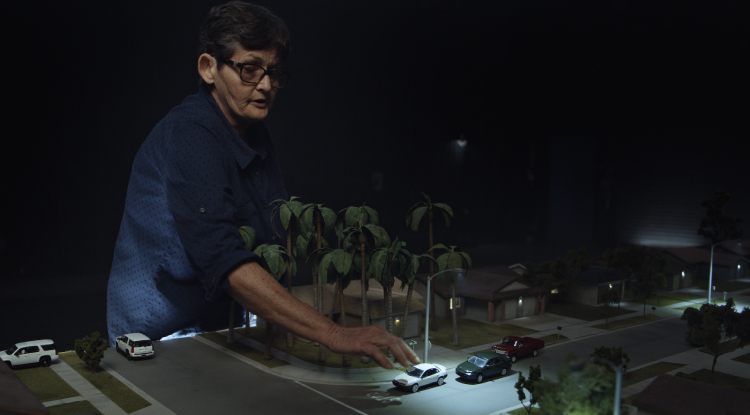

Netflix lanza su nueva película documental ¿Por Qué Me Mataron?, de el ganador del Emmy Julian Cautherley y el director Fredrick Munk.

Producida por la nominada al Óscar Lucy Walker, el límite entre la justicia y la venganza se desdibuja cuando una familia destrozada usa las redes sociales para encontrar a los asesinos de la joven Crystal Theobald.

El documental de investigación y emotivo, es la historia de una madre que después de que matan a su hija, usa el sitio de redes sociales MySpace para investigar a las personas que cree que son responsables, lo que genera repercusiones para varias familias.
La película de Netflix documental se estrenará globalmente, el 14 de abril de 2021.

Por Qué Me Mataron Netflix Tráiler
Echa un vistazo al tráiler en español latino y conoce lo que llega a Netflix en durante el mes de abril.
Informacion sacada de la pagina: Netfliteando.com